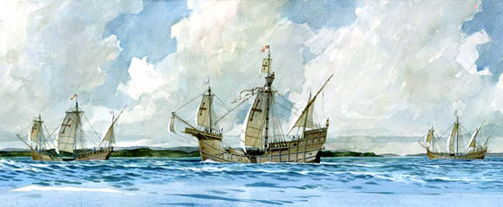
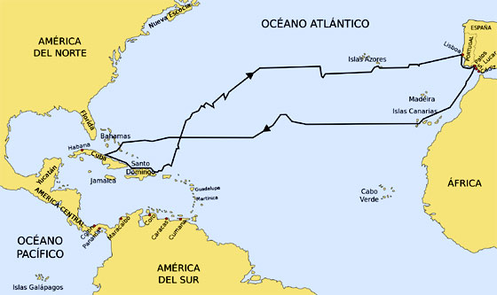

En lo que hace a su persona, los trabajos reunidos en la Raccolta Colombiana (Italia, 1892-1896), el Documento Aseretto (hallado unos años después), las investigaciones de los eruditos españoles Muñoz y Fernández Navarrete y el más reciente Diplomatorio Colombino dan cuenta, definitivamente, de su origen genovés y humilde, y permiten reconstruir sin mayores dudas ni lagunas los avatares de su agitada e intensa biografía.Respecto a la importancia de su hazaña cabe señalar que fue sorprendente en lo geográfico y oportuna en lo político, pero no tan novedosa en lo científico como se suele afirmar. La ciencia de fines del siglo XV ya aceptaba que la Tierra era un globo esférico, sabía que teóricamente se podía llegar a las antípodas navegando hacia el oeste, conocía la existencia de islas y tierras septentrionales exploradas por vikingos y daneses, y suponía que quien intentara arribar a las Indias por el poniente podía tropezar en su camino con alguna «terra incógnita».
Un joven aventurero

El estudio comparado de diversas documentaciones permite asegurar que el futuro navegante nació en Génova y que tal hecho debió de ocurrir entre el 25 de agosto y el 31 de octubre del año 1451. Se le dio el nombre de Cristóforo, y fue el primer hijo del matrimonio formado unos cinco años antes por Doménico Colombo y Susana Fontanarossa. La familia estaba asentada en la Liguria desde por lo menos un siglo atrás, aunque sus miembros siempre fueron campesinos o artesanos sin medios de fortuna. El propio Doménico parece haberse trasladado desde Quinto a Génova alrededor de 1429 para aprender el oficio de tejedor. Los Colombo tuvieron otros tres hijos y una hija, Bianchinetta. Dos de estos hermanos Colombo habrían de jugar un papel preponderante y continuo en las aventuras y desventuras del primogénito: Bartolomé y Giacomo. Al segundo de ellos se le llamaría Diego en España.
El gran proyecto

A partir de ese momento, Cristóbal Colón comenzó a soñar y diseñar el ambicioso y desmesurado proyecto que habría de obsesionarlo toda su vida: descubrir una ruta más corta y segura a las Indias, navegando hacia occidente. Ya se ha dicho que la idea teórica estaba bastante difundida y se han citado antecedentes más o menos legendarios, a los que hay que agregar los que el propio navegante pudo recoger en sus estancias en Porto Santo y la atmósfera de «expansión oceánica» que se respiraba en Portugal a partir de los descubrimientos y exploraciones de los archipiélagos atlánticos y las costas de África.